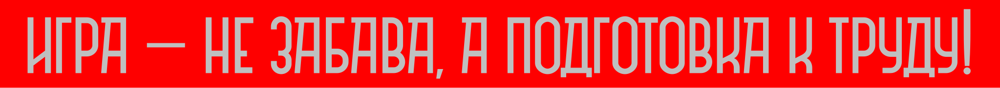
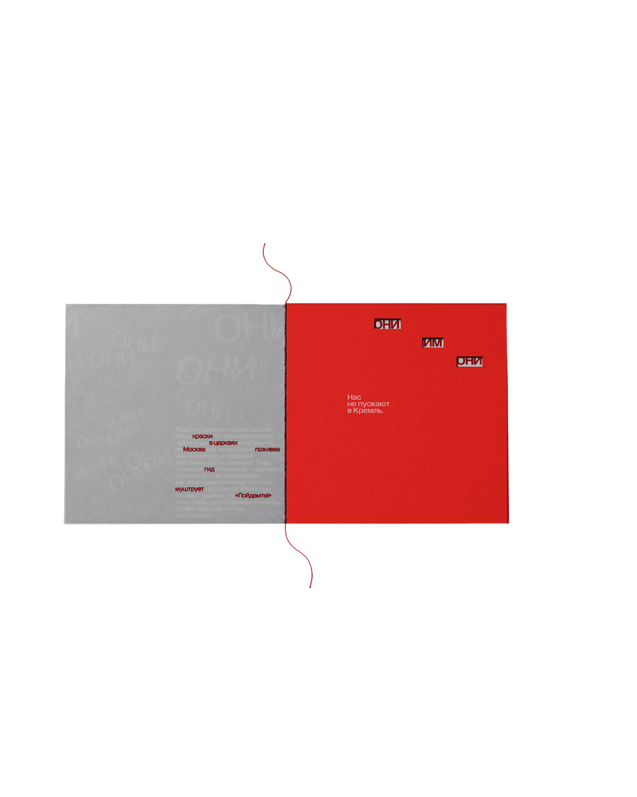

Разобрать
Выбрать текст, разметить его повторы, действия, интонации и смысловые ударения
Campus DesignWorkout · Do you read me? · June
Экспериментальный зин по путевым заметкам Памелы Трэверс, в котором текст управляет не только взглядом, но и руками читателя
Пойдёмте! ↓
Задача воркшопа
Выбрать текст, разметить его повторы, действия, интонации и смысловые ударения
Перевести найденный ритм в последовательность страниц, клапанов, окон и разворотов
Сначала прочитать
Памела Трэверс
«Московская экскурсия»
1934
Меня зацепила не фабула, а густота описания. Серый пейзаж, сверкающие купола, мифические ОНИ, приказной голос гида — в тексте уже были цвет, движение и монтаж
Я начала разбирать текст буквально: где он ускоряется, где повторяется, где упирается в препятствие и где сам просит что-нибудь с ним сделать
Препарирование
Прочитать, подумать, понять
Найденная идея
Памелу постоянно направляют, торопят и не пускают туда, куда она хочет попасть. Зин перенимает роль гида и начинает управлять руками читателя
Из текста в объект
Фраза «миля за милей» становится длинной полосой, которую нужно вытащить и снова свернуть
Круг связывает пузырь, солнце, луковичный купол и взгляд России на Восток
Повтор сначала едва заметен, затем становится громче, теснее и агрессивнее
Текст сужается до стены. В церковь приходится проникать через маленькую прорезь
Лозунг из детских яслей растягивается в длинную гармошку и вылезает далеко за формат зина
Финальный портрет возвращает к тому, что Москва в зине — не объективная Москва, а её впечатление от поездки

Режиссёрская работа с текстом
Как и Памеле, ему не дают просто листать куда угодно: где-то нужно потянуть, где-то заглянуть в щель, где-то развернуть страницу целиком
Визуальная система
Цвет дороги, бескрайнего пейзажа и Москвы, которую Трэверс сначала видит почти бесцветной
Чем ближе Москва, тем больше красного: напряжение, запреты, плакаты и наступающие «ОНИ»
Одно исключение из двухцветной системы — золотая фольга там, где купола вспыхивают в солнечных лучах
Шрифтовое направление — Gramatika Романа Горницкого. Shifted-начертание продолжает механику зина: текст смещается, разрывает ровную строку и заставляет взгляд двигаться
Gramatika — Roman Gornitsky / The Temporary StateСамая длинная фраза — самая длинная деталь

День 2 · Верстаем, печатаем, режем
На второй день я собрала всё руками и начала челленджить собственную идею: понятно ли, куда лезть, что тянуть, что открывать и можно ли потом собрать зин обратно
Вместо аккуратного макета появился прототип, собранный тяп-ляп из скотча, клея и конфетной фольги


Развороты · 01—04
Прототип быстро показал, что работает: щель правда заставляет лезть внутрь, «ОНИ» начинают давить, а гармошка просится наружу. И что ещё надо чинить: прорези, сборку и настоящую фольгу




Итог
Памела по Москве ходила — и читателю придётся
За два дня получился готовый к печати зин. Главное, я успела проверить: текст действительно можно читать не только глазами. Где-то его приходится вытаскивать, где-то — искать, а где-то он буквально не пускает дальше